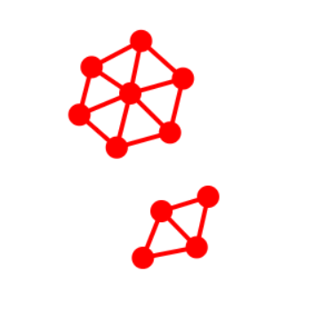

The goal this lesson is to make an approximate continuum out of our particles. To do this we need to connect a particle to all other particle within a given "search radius". Below is such a system.
Our algorithm is to visit each particle in turn (call this the target particle) and search all other particles to see if they are within the search distance. In they are we connect a spring between those two particles. The image below shows two typical clusters of particles that result from this strategy.

Assignment 1. I've started to change the starter code to make it more modular and better structured. As a first step I've included all the "global" variables in an object called 'sim' along with the 'canvas' and 'context' initialization. This is just a first step. However, I had to change the code then to address the globals via the 'sim' object ie 'sim.deltaT' and 'sim.context' etc. I left a couple of errors for you to correct. Find them and make the code run again.
Assignment 2. Write a function called detectNeighbors() to do this search. Call it every time step. Set the search radius to 'sim.interactionDistance=50'.
Assignment 3. We already saw that we can break springs. I have put in a function to do this if the tensile force in the spring exceeds 'yieldForce'. With the following parameters I want you to construct as piece of material with as large a hole as possible in it. The code must be running and stable. You can use damping but you can't use any fixed particles. The solid must rest on the bottom.